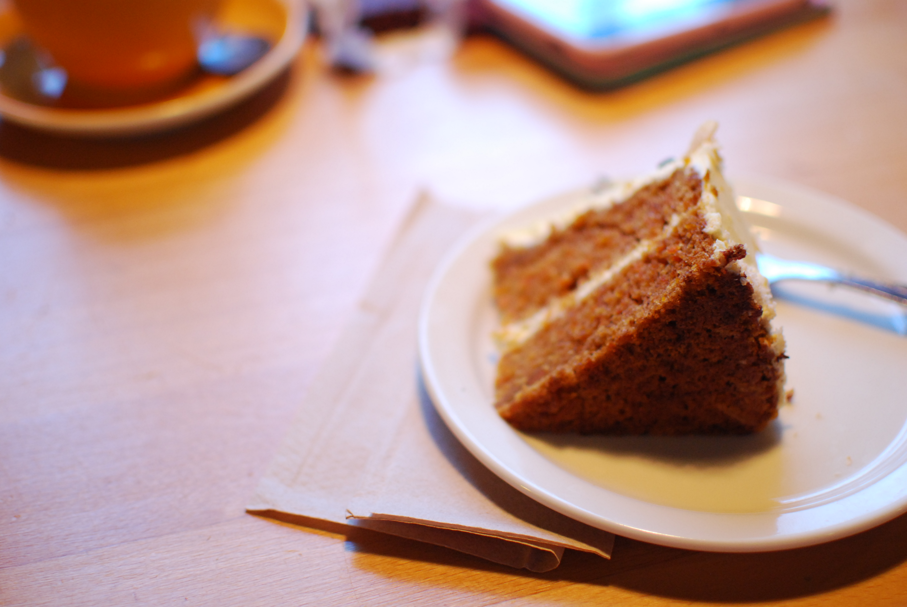

CoffeeScript - MVC from Scratch - 101
Sébastien Barbieri,
@scips
MVC - CoffeeScript - 101
Sébastien Barbieri, RTBF, 25-02-2014
CoffeeScript
CoffeeScript
Language that compile in Javascript
Cross browser compatible
Best practices
Easier to read
Syntax validator
Classes
Install coffee script
sudo npm install -g coffee-script
Create a file:
touch test.coffee
in a terminal run:
coffee test.coffee
add some code
console.log "Hello world"
run again:
coffee test.coffee
compile:
coffee -c test.coffee
Check js generated file:
cat test.js
CoffeeScript
No coffee without
cake
Cake
is the
Make
for CoffeeScript
Cakefile
: are the equivalent of makefile
cakefiles use tasks that you can launch by running:
cake mytask
It will be used:
To build our application (compile, concatenate, minify...)

Photo by Laura
CoffeeScript + Cake + Sublime
Install the coffee script package:
https://github.com/Xavura/CoffeeScript-Sublime-Plugin
Use the
via package control
method
Photo by Laura
Require.JS
Thanks
Sébastien Barbieri
CrossMedia Solution Engineer @RTBF
@scips
Slides
:
http://opendojo.github.io/mvc-coffeescript-101/presa/
Photo by SCiPS
 Photo by SCiPS
Photo by SCiPS
Photo by SCiPS
Photo by SCiPS